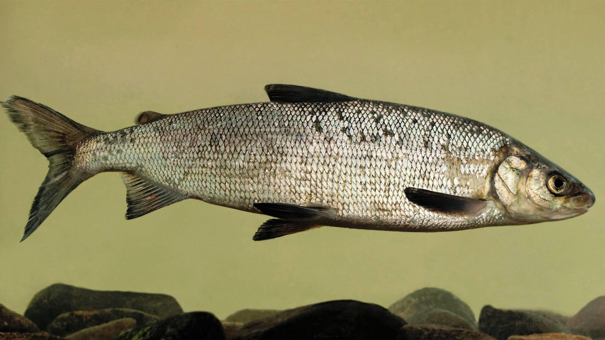
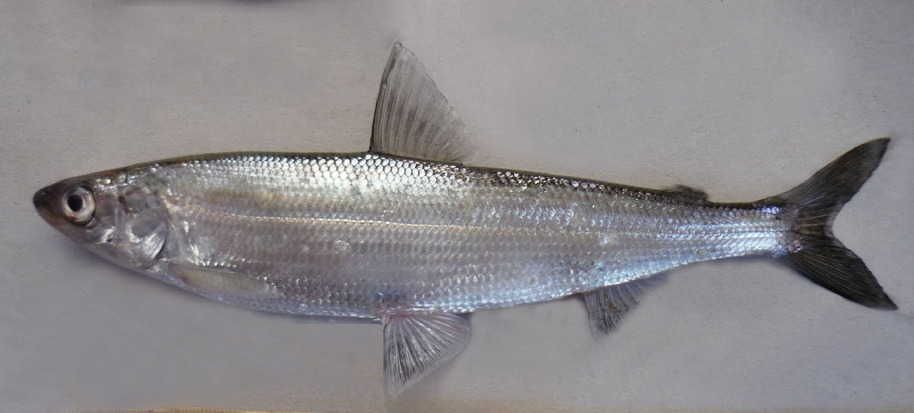
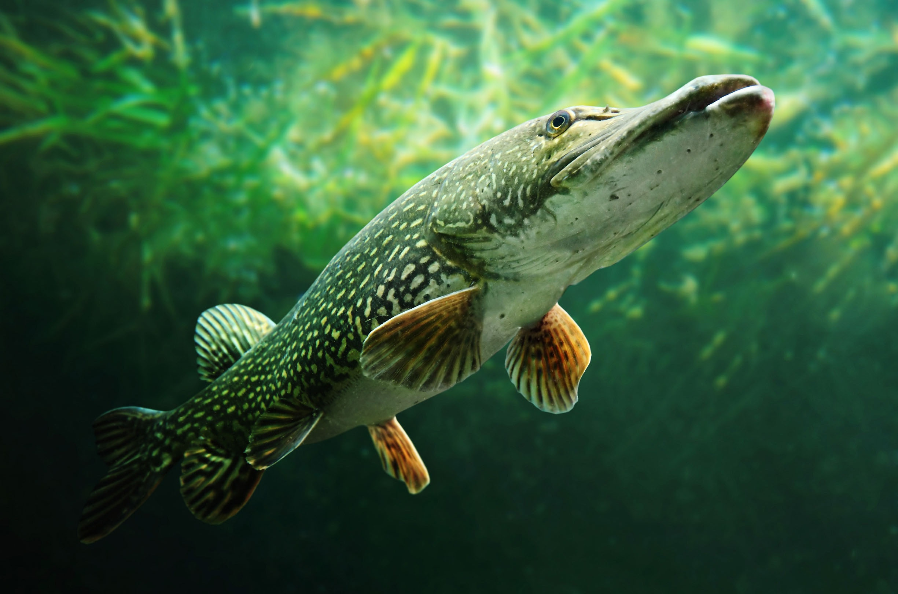
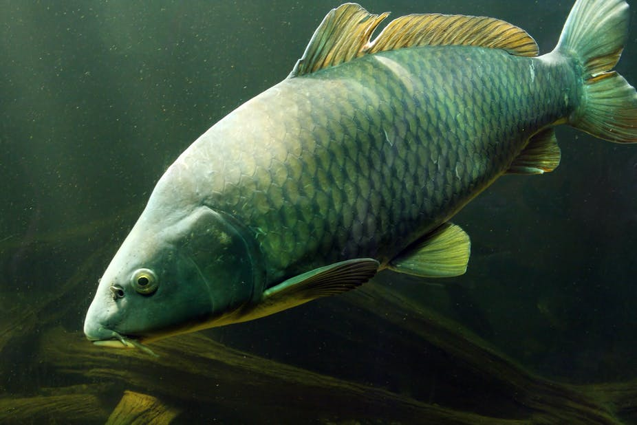
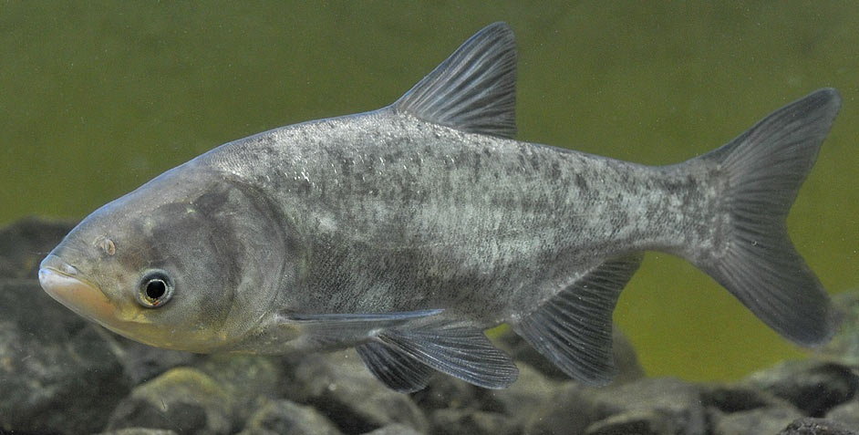

Верхне-Тобольский Рыбопитомник
Верхне-Тобольский Рыбопитомник
Верхне-Тобольский рыбопитомник занимается разведением: сига, рипуса, пеляди, судака, амур, толстолобик, щуки и карпа.

Сиг
– ценная рыба семейства сиговых. Рыба стайная. В водоемах Ю. Урала обитает, а в отдельных водоемах предгорной зоны и воспроизводится, гибридная форма чудского и ладожского сига, которая к настоящему времени полностью акклиматизировалась в местных условиях. Предпочитает чистую холодную воду, богатую кислородом. Держится в толще воды. Питается личинками насекомых, ракообразными, молодью рыб и их икрой. Достигает полуметровой длины и массы 6кг. Нерестится в ноябре- начале декабря при температуре воды 3-4 градуса.

Рипус
– ценная рыба семейства сиговых. Держится стаями. В водоемах Ю. Урала прижилась гибридная форма европейской ряпушки с чудским сигом. В настоящее время наблюдаются первые признаки вырождения популяции гибрида местной формы. Предпочитает тиховодье. Держится у дна на большой глубине. Питается планктоном, личинками насекомых, мелкой рыбой. Достигает длины 40 см и массы 600 гр. В условиях Ю. Урала живет три года. Нерестится осенью в ноябре при температуре 3-4 градуса.
 Пелядь
Пелядь
– ценный объект рыбоводства. Существуют три биологические группы пеляди: озерная, речная и озерно-речная. Достигает 58 см длины тела и массы до 2,7 кг. Отличается большим темпом роста. Питается планктоном. Держится в толще воды и у дна.
 Судак
Судак
– является ценным объектом пресноводного рыбоводства. Относится к семейству окуневых. Рыба стайная. Типичный хищник открытой воды. Предпочитает чистые, богатые кислородом пространства, избегая мелководий, илистых и заросших водоемов. Держится обычно на ямах с колодником на дне, захламленных омутах с галечно-песчаным, каменистым дном, на закоряженных скатах затопленных русел в водохранилищах, пятачках под плотинами, порогами с обратным течением. Крупные особи держаться обособленно. Питается мелкими прогонистыми рыбешками. Длина тела может достигать 1,3 м, масса более 10 кг. Икрометание происходит обычно при температуре воды 17-20 градусов. Самец охраняет кладку. Хищник активен все сезоны года, за исключением глухозимья и времени нереста. При совместной посадке со щукой является ее прямым пищевым конкурентов.

Щука
– самый крупный аборигенный вид водоемов Южного Урала семейства щуковых. Достигает длины 1,5м и массы 35 кг. Хищник засадного типа. Держится в одиночку там, где удобно подкараулить добычу и остаться незаметным: у излома дна, около валуна, топляка, коряжины, у подмытого берега, среди зарослей водных растений. Рыба очень прожорлива, питается практически любыми рыбешками, включая свою же молодь. Нерестится сразу после схода льда при температуре 3-6 градусов. При одинаковом спектре питания с судаком имеет свою нишу и может с ним ужиться.

Карп
– ценный объект рыбоводства. Отличается большим темпом роста и высокой плодовитостью. Это всеядная рыба, хорошо усваивающая искусственные корма. Держится в толще воды и у дна. При благоприятных условиях на первом году жизни может достигать массы 300 гр., на втором – 1 кг и более.
Культивирование растительноядных рыб позволяет решить следующие проблемы:
— улучшить экологические качества водоёма ;
— формирует товарную рыбопродукцию высокого гастрономического качества (возможные уловы от 10-15 до 50-60 кг/га и более).
 Белый амур
Белый амур
– рыба биологический мелиоратор, интенсивно выедает заросли водных растений. Питается водной растительностью – рдестами, харой, элодеей, роголистником, ряской, водорослями (кладофора), донными мхами и многими другими макрофитами, относящимися не только к мягким, но и к жестким (молодой тростник, рогоз широколистный).
Динамика весового роста белого амура в условиях водоемов Казахстана:
| 0 | 1+ | 2+ | 3+ | 4+ | 5+ |
| 15-70 | 100-550 | 340-900 | 600-1800 | 1200-3500 | 1900-5800 |

Белый толстолобик
– пелагическая стайная рыба, постоянно курсирующая по водоему и фильтрующая скопления водорослей в качестве своей пищи. Белый толстолобик ценен как потребитель первичной биопродукции водоёма, а также как биологический мелиоратор водоёмов, подверженных «цветению» воды на основе излишнего эвтрофирования.
Динамика весового роста белого амура в условиях водоемов Казахстана:
| 0 | 1+ | 2+ | 3+ | 4+ | 5+ |
| 30-120 | 250-800 | 450-1600 | 10000-2800 | 1600-4700 | 2500-6500 |
Питание – личинки толстолобика после вылупления из икры несколько дней потребляют мелкие формы зоопланктона, но через две недели переходят на потребление фитопланктона, что не создает им в дальнейшем пищевой конкуренции с другими видами рыб, выращиваемых в водоёме.
Воспроизводство всех видов рыб целесообразно проводить в существующих цехах области по договорам в виду относительно малых объемов зарыбления этими видами водоема и длительностью инкубации.
Зарыбление водоема желательно производить подрощенной молодью или годовиками. Для этих целей необходимо предусмотреть вблизи водоема подходящий земельный участок, произвести землеотвод и после согласования проекта обустроить пруды для подращивания зарыбляемых видов рыб.